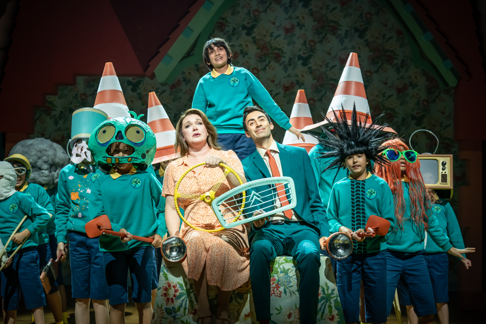

Press & Testimonials
My Press
From August 2023 to February 2024 I was part of the original cast of the National Theatre's musical adaptation of Roald Dahl's "The Witches". I played in the ensemble in 30+ performances and was the understudy for the role of Helga.
Here are some highlights:
National Theatre Children’s Musical Director - Sarah Morrison - "Congratulations on being in the original cast of The Witches. Your enthusiasm and lovely smile are infectious and, alongside your fab vocal skills, will help you to go so far. I can’t wait to see what musical adventures are in store for you. Well done!"
The Independent - "The National Theatre’s sparkling adaptation of Dahl’s story about a group of child-hating witches has the sardonic humour of ‘Matilda’ and ‘Paddington 2’ and is as electrifying as a failed bid to untangle your broken fairy lights."
The New York Times - "It’s a deftly rendered production, a high-quality piece of family entertainment that skilfully blends the playful and the macabre, and does justice to the author’s distinct comic style"
London Theatre - "This gobsmackingly great adaptation is the best new musical of the year"

It's showtime!

I loved the orange wig